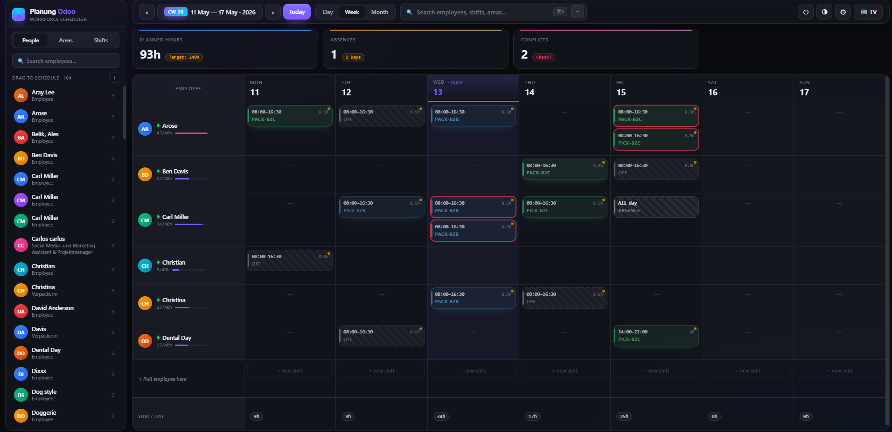

Modern drag & drop shift planner for Odoo 19 Community
GDPR-safe No external CDN 21 Languages OPL-1
A focused, fast shift-planning cockpit for warehouses, production lines, retail and hospitality teams. Drag employees onto a weekly grid, copy last week with one click, and broadcast the published schedule to a TV on the shop floor — all without leaving one screen.

The main planning view with drag & drop scheduling, live KPI bar (planned hours, occupancy rate, absences, conflicts), sidebar with employees, areas, and reusable shift templates.
Drop employees, areas, or shift templates directly on the weekly grid. Live conflict detection highlights overlapping shifts at a glance.
Approved leaves from hr.leave appear automatically on
the planner and the TV kiosk — no double bookkeeping needed.
Auto-refreshing public display of the published roster, protected by an admin-set access token. Sensitive leave reasons are never exposed.
One-click wizard to clone last week's schedule, with options to filter published shifts only or clear the target week first.
Define templates like "Early shift 06:00–14:00" and drag them onto the grid to create shifts instantly with predefined times and areas.
Switch between four view modes. Full global search across employees, areas, and shift notes. Print-friendly layout included.
Plan in draft, publish when ready. Only published shifts appear on the TV kiosk. Optional email notification on publish.
Set individual weekly hours targets (full-time 40h, part-time 20h, mini-job 10h) for accurate workload bars in the planner.
Designed for European customers. No external resources are loaded — no Google Fonts, no CDN, no analytics. All data stays on your Odoo server. The TV kiosk is disabled by default and requires an administrator-set token before any data is rendered. Approved leaves are shown generically as "Absent" on the public kiosk — the leave reason (sick, vacation, etc.) is never exposed. Kiosk token comparison uses constant-time HMAC to prevent timing attacks.
Available in 21 languages: English, German, Spanish, French, Italian, Portuguese, Brazilian Portuguese, Dutch, Polish, Czech, Slovak, Romanian, Hungarian, Finnish, Swedish, Danish, Turkish, Russian, Ukrainian, Arabic, Japanese, and Chinese (Simplified).
dienstplan_lager folder into your Odoo
addons path.Settings → Technical → System Parameters under key
dienstplan_lager.kiosk_token.The kiosk URL is /dienstplan/kiosk?token=YOUR_TOKEN.
Generate a strong token, for example:
python3 -c "import secrets; print(secrets.token_urlsafe(32))"
Store it as the value of system parameter
dienstplan_lager.kiosk_token. Leaving the parameter empty
keeps the kiosk disabled.
Odoo Community 19.0. Depends on hr,
hr_holidays, web and mail —
all standard Community modules. No Enterprise dependencies.
Two security groups: Shift Viewer (read-only, "My Schedule" page) and Shift Planner (full planning access). HR Managers automatically receive Planner rights. Multi-company record rules are included.
Odoo Proprietary License v1.0 (OPL-1). See LICENSE for details.